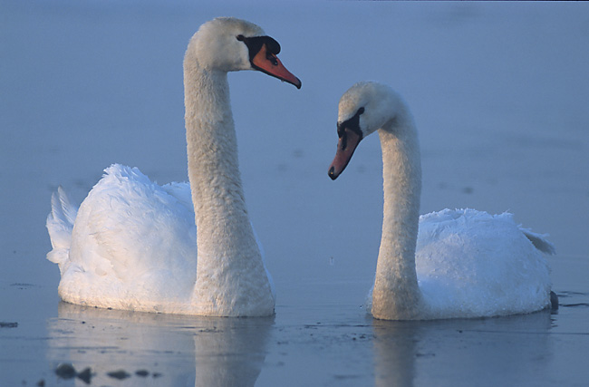

<!DOCTYPE html>
<html lang="en" dir="ltr"
  <head>
    <meta charset="utf-8">
    <title>Swan</title>
  </head>
</html>

<html>
  <h1> Swan
  <h3> </h3>
  
    <head></head>
    <body>
      <p>Swans are birds of the family Anatidae within the genus Cygnus. The swans' closest relatives include the geese and ducks. Swans are grouped with the closely related geese in the subfamily Anserinae where they form the tribe Cygnini. Sometimes, they are considered a distinct subfamily, Cygninae. There are six living and many extinct species of swan; in addition, there is a species known as the coscoroba swan which is no longer considered one of the true swans. Swans usually mate for life, although "divorce" sometimes occurs, particularly following nesting failure, and if a mate dies, the remaining swan will take up with another. The number of eggs in each clutch ranges from three to eight.</p>
    </body>
    <h2> Table of Contents
      <h3> </h3>
      <body>
      <p>
        <a href="#Description">1. Description</a>
      </p>
      <p>
        <a href="#Behavior">2. Behavior</a>
      </p>
      </body>
    <h2> Description
      <h3> </h3>
      <a name="Description"></a>
      <body>
        <p>Swans are generally found in temperate environments, rarely occurring in the tropics. A group of swans is called a bevy or a wedge in flight. Four (or five) species occur in the Northern Hemisphere, one species is found in Australia, one extinct species was found in New Zealand and the Chatham Islands, and one species is distributed in southern South America. They are absent from tropical Asia, Central America, northern South America and the entirety of Africa. One species, the mute swan, has been introduced to North America, Australia and New Zealand.</p>
      </body>
    <h2> Behavior
      <h3> </h3>
      <a name="Behavior"></a>
      <body>
        <p>Swans feed in water and on land. They are almost entirely herbivorous, although they may eat small amounts of aquatic animals. In the water, food is obtained by up-ending or dabbling, and their diet is composed of the roots, tubers, stems and leaves of aquatic and submerged plants.</p>
      </body>

</html>
